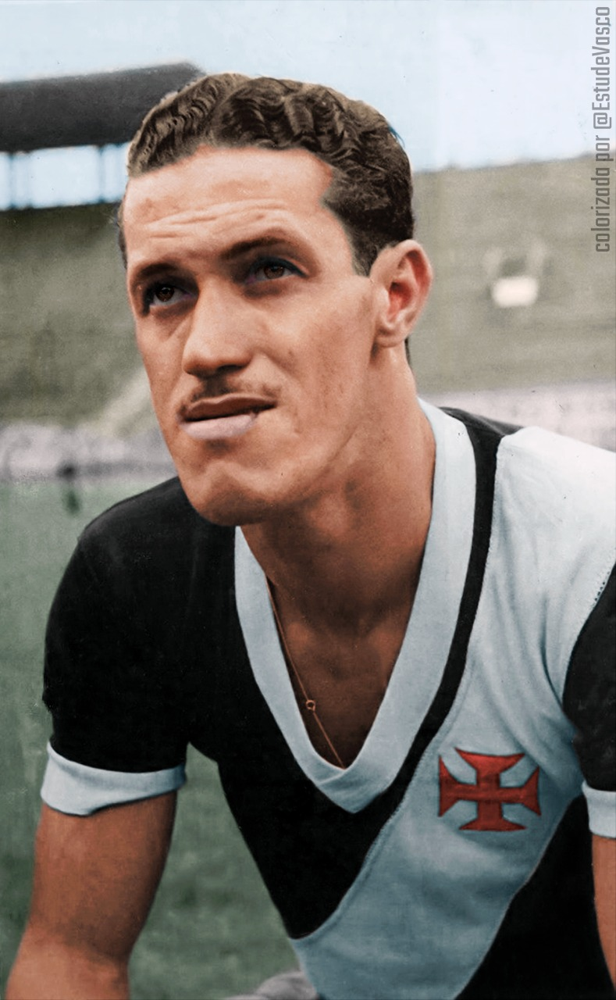

Roberto Dinamite: Considerado por muitos como o maior jogador da história do Vasco, Roberto Dinamite é o maior artilheiro da história do clube, com mais de 600 gols marcados. Ele foi fundamental em diversas conquistas do Vasco, incluindo o Campeonato Brasileiro de 1974.
Romario:Um dos maiores atacantes da história do futebol mundial, Romário brilhou no Vasco durante a década de 1990. Ele foi peça fundamental na conquista da Copa Libertadores de 1998, marcando gols importantes na campanha do título.
Ademir Menezes: foi um dos maiores ídolos da história do Vasco da Gama. Como atacante na década de 1940 e 1950, ele brilhou com sua habilidade excepcional e foi artilheiro do Campeonato Carioca por quatro vezes. Além disso, foi o artilheiro da Copa do Mundo de 1950. Ademir deixou um legado de conquistas e talento que o torna uma figura inesquecível para os torcedores vascaínos.
Bellini: foi um renomado zagueiro brasileiro e capitão da Seleção Brasileira na conquista da Copa do Mundo de 1958. No Vasco da Gama, ele teve uma passagem marcante entre 1952 e 1962, sendo uma figura emblemática da equipe.